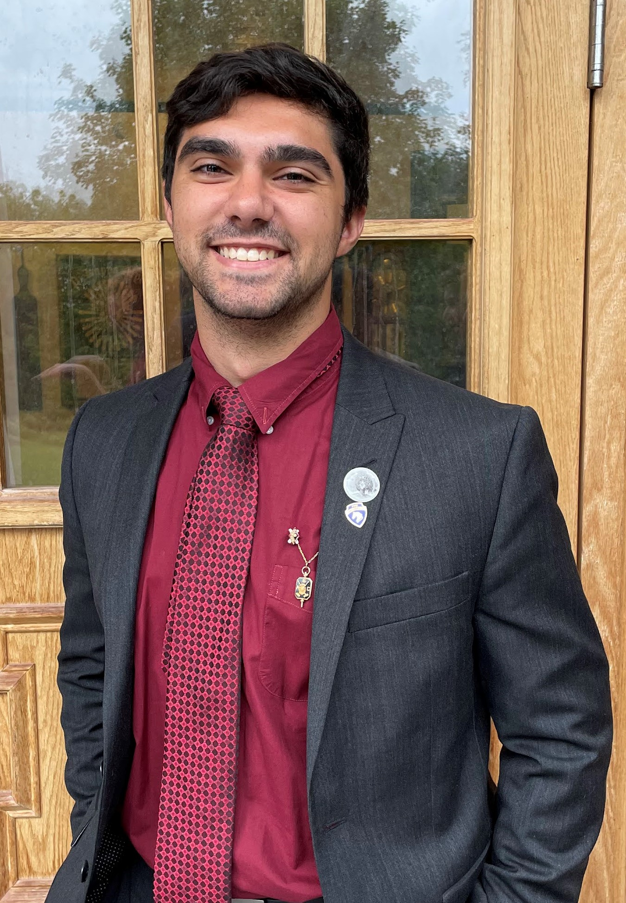

Logan Bryant
BS of Computer Engineering w/ Minor in CS
About
I am a recent graduate from Rose-Hulman Institute of Technology graduating Cum Laude with a Bachelor of Science in Computer Engineering with a minor in Computer Science. I have had the opportunity to work with many amazing people at Rose during class projects as well as my internships. I am ready to use the skills I have developed during my time towards a full-time job. I am passionate about working with different types of technology, especially new cutting edge technologies. I am working to improve my skills working on front-end development and soon putting my portfolio out in a React app. In other ways I plan to continue my knowledge of embedded systems and web development through different IoT projects and growing my knowledge using AWS and other services available.
On campus I was involved in the Pi Kappa Alpha Fraternity (PIKE), Association of Future Alumni (AFA), and CSERVE. PIKE was one of my bigest commitments during my college career. I held the chair as President as well as the positions of the Vice President of Enrichment and Brotherhood while also attending seven leadership summits held around the middle and eastern US. At one of these events, I had the chance to stand in for the chapter and accept the Robert Adger Smythe Award as one of the top 10% of chapters in the country. For AFA, we reached out to the Rose-Hulman alumni to connect on a professional level and make sure they feel welcome when returning to campus. The group also helps to put on a dinner and get together during homecoming for the alumni. CSERVE is an organized group that supports Career Services to put on the Career Fair. We help the companies setup and cleanup as well as provide help getting anything they need during the fair.
Outside of school and work, some of my passions lie in multiple areas. I have always been passionate about soccer and staying healthy. Some of my time during school and going forward is dedicated to the gym and maintaining a healthy lifestyle. I also enjoy many card games and board games. Some examples include Euchre, Spades, Rummy, Catan, and Dominion. My interest in video games largely drives my interest in computers and why I chose my major. I have always enjoyed RPG and JRPG games with fantasy aspects like Elder Scrolls, Assassins Creed, and Dragon Quest. These titles and more bring me excitement and entertainment while also growing my interest in technology and more recently having a VR headset. The technology powering that goes into bringing people enjoyment is the main reason that brought me to where I am today, as well as my interest in growing technologies.